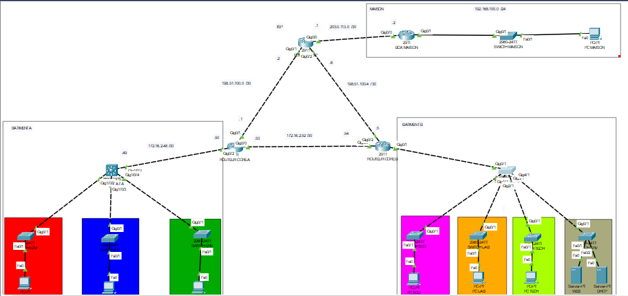
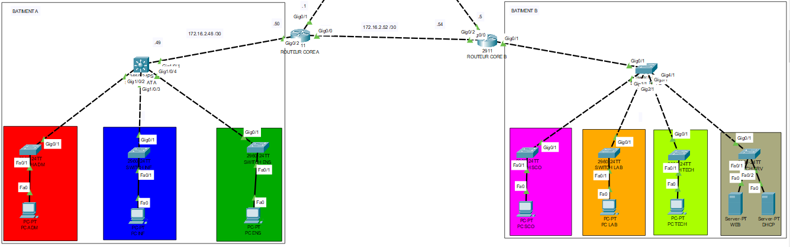
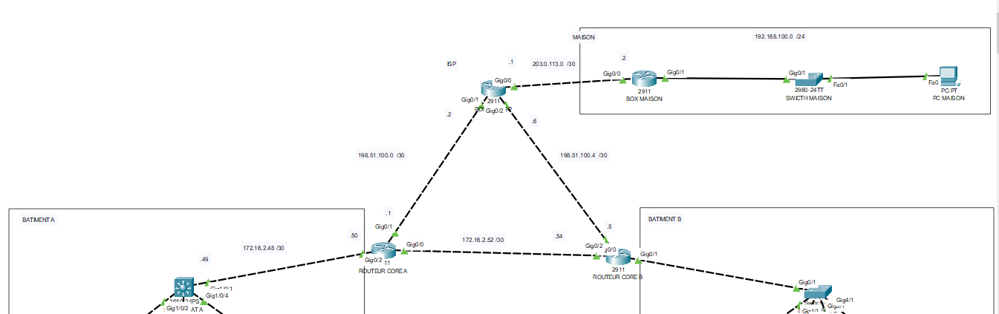
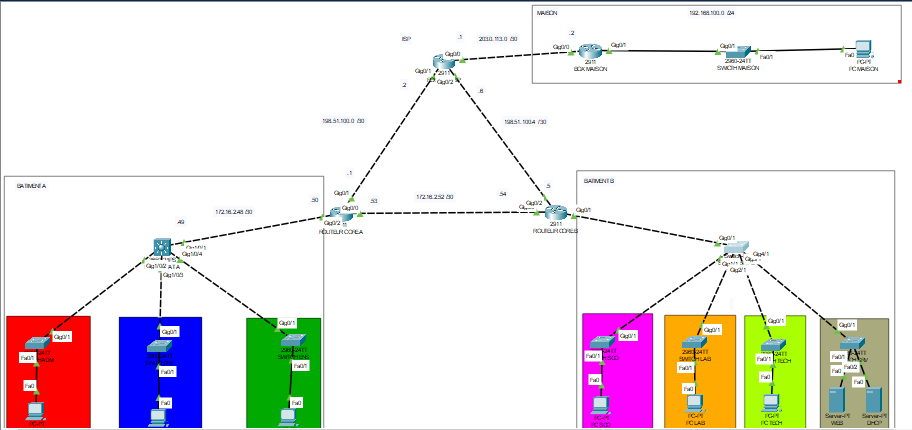
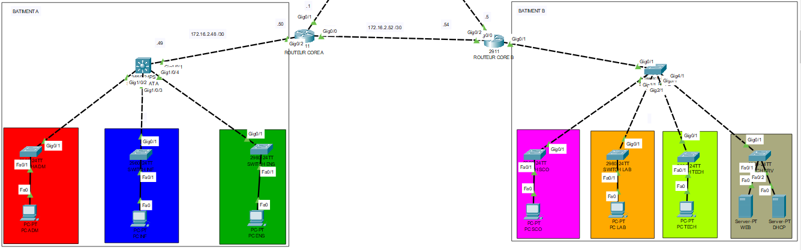
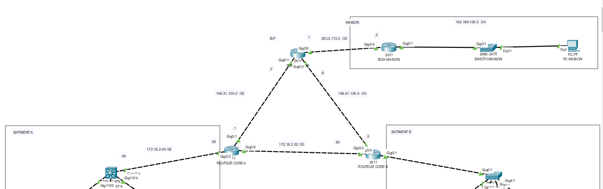

Simulated Network Presentation – ESAIP University
This project implements a complete and hierarchical network infrastructure for ESAIP University, spread across two buildings: Building A (Administration, IT, Teaching) and Building B (Student Services, Labs, Academic Departments).
Both buildings are interconnected via two CORE routers providing traffic redundancy, and connected to an ISP router, offering external access, notably for a remote client (home) through a NAT-ed link.
Technical Objectives:
- Efficient IP addressing plan using VLSM
- Configuration of switches with port security
- Creation of VLANs for network segmentation and inter-VLAN routing
- Implementation of dynamic routing with OSPF
- Deployment of DHCP for automatic IP address assignment
- NAT/PAT to allow internal networks to access the Internet
- Access to a local web server from the outside
- Bonus: Setup of ACLs to enhance internal communication security
This project demonstrates a professional approach to network design and simulation in an academic setting.
System Illustrations
 





Technologies and Tools Used
- Network simulation tools: Cisco Packet Tracer
- Routing protocol: OSPF (Open Shortest Path First)
- Network technologies: VLAN, Inter-VLAN Routing, DHCP, NAT/PAT, ACL
- IP planning: VLSM (Variable Length Subnet Masking)
- Simulated equipment: Switches, Routers, Servers
Downloads
You can view or download the project-related files: